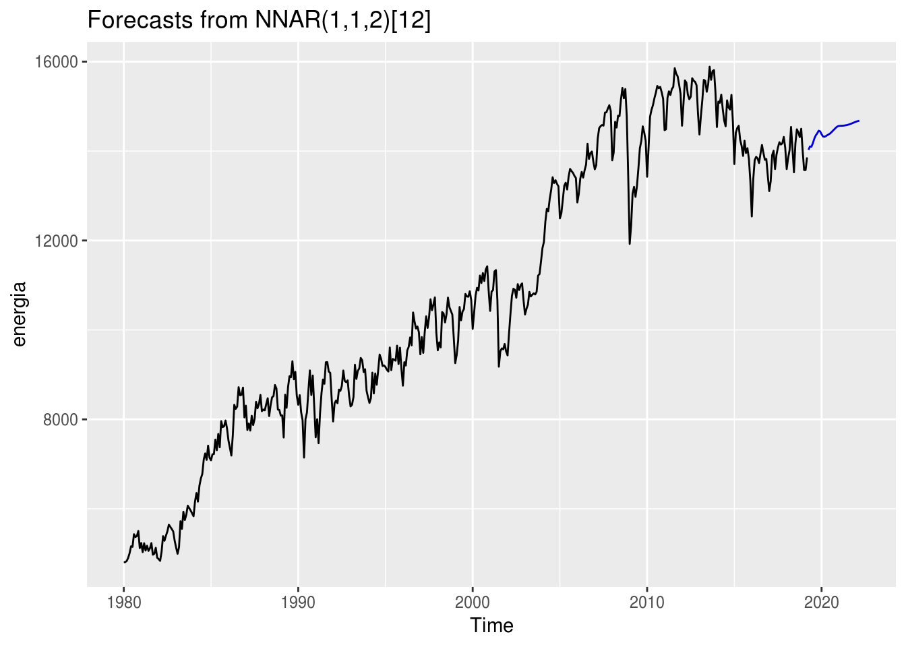
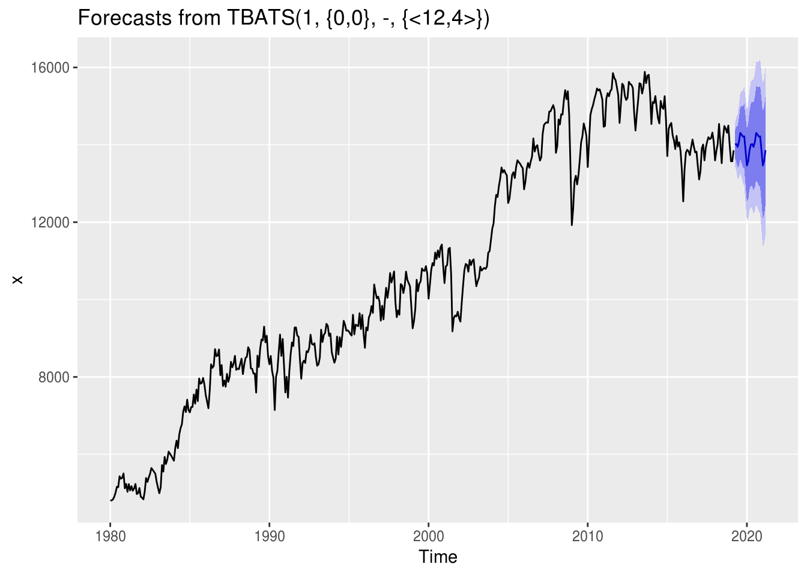

Capítulo 7 Outros Métodos
# install.packages(c("fpp", "vars"))
library(fpp)
library(forecast)
library(tidyverse)
library(vars)
library(mafs)Forecasting é um assunto amplo demais para ser compreendido em algumas poucas horas. Existem dezenas de métodos de previsão diferentes, cada um apropriada a situações específicas. Além das técnicas clássicas apresentadas aqui, existem ainda algumas outras que vem ganhando destaque.
7.1 Redes Neurais
Redes neurais artificiais são métodos de previsão baseados em modelos matemáticos do cérebro humano. Permitem relacionamentos não-lineares complexos entre a variável dependente e a independente.
Uma rede neural pode ser interpretada como uma rede de neurônios organizados em camadas. Os preditores ou inputs formam a camada de baixo e as previsões ou outputs formam a camada de cima. As camadas intermediárias, que podem existir ou não, são chamadas de ocultas.
Cada preditor tem um coeficiente associado a ele, chamado de peso. Inicialmente, os pesos atribuídos aos inputs são valores aleatórios que são atualizados a medida em que a rede neural utiliza um algoritmo de aprendizagem para minimizar uma função de custo do modelo, que corresponde a uma métrica de erro.
A formulação matemática de uma rede neural é razoavelmente complexa. Contudo, ajustá-la em uma série temporal é bem simples:
energia <- readRDS("data/ts_energia.Rda")
mod.rn <- nnetar(energia) %>% forecast(h = 36)
autoplot(mod.rn)
7.2 Pacote mafs
O pacote mafs é basicamente um atalho para o pacote forecast. Sua função principal é select_forecast(), que recebe uma série temporal como input, divide-a em séries de treino e teste, ajusta 18 modelos diferentes no conjunto de treino, mede sua acurácia em relação ao conjunto de teste, seleciona o melhor modelo de acordo com a métrica de erro escolhida pelo usuário e retorna os resultados dos modelos ajustados e os valores previstos para o futuro.
Um exemplo de uso:
system.time({
mod.mafs <- select_forecast(energia, test_size = 24, horizon = 24, error = "MAPE")
})## Warning in mean.default(x, na.rm = TRUE): argument is not numeric or
## logical: returning NA## Warning in trainingaccuracy(f, test, d, D): test elements must be within
## sample## user system elapsed
## 116.988 35.789 107.696A função select_forecast() retorna como output uma lista de três elementos:
- O resultado da acurácia dos modelos na série de teste;
mod.mafs$df_models %>%
arrange(MAPE) %>%
knitr::kable()| model | ME | RMSE | MAE | MPE | MAPE | MASE | ACF1 | best_model | runtime_model |
|---|---|---|---|---|---|---|---|---|---|
| tbats | 37.529127 | 208.9966 | 154.3667 | 0.2495710 | 1.101182 | 0.2726785 | 0.3058238 | tbats | 6.370 |
| bats | 8.397109 | 206.3553 | 160.0462 | 0.0451775 | 1.148213 | 0.2827109 | 0.2801706 | tbats | 2.395 |
| StructTS | -65.694710 | 235.3721 | 163.7315 | -0.4814760 | 1.180864 | 0.2892207 | 0.2224535 | tbats | 1.196 |
| stlm_arima | -55.927922 | 231.2390 | 178.6971 | -0.4099147 | 1.285967 | 0.3156564 | 0.1845728 | tbats | 0.099 |
| hybrid | -138.913205 | 242.6880 | 179.7722 | -1.0063123 | 1.293593 | 0.3175555 | 0.2127121 | tbats | 11.615 |
| ets | 157.249033 | 265.8208 | 222.2503 | 1.1101750 | 1.584445 | 0.3925902 | 0.2877032 | tbats | 2.380 |
| stlm_ets | 193.465478 | 300.4347 | 250.3780 | 1.3671693 | 1.785035 | 0.4422759 | 0.2721314 | tbats | 0.077 |
| rwf_drift | -122.184230 | 355.2741 | 270.4215 | -0.9174526 | 1.950492 | 0.4776815 | 0.4760469 | tbats | 0.003 |
| naive | 132.916667 | 330.8344 | 281.5000 | 0.9003014 | 1.993695 | 0.4972509 | 0.4091301 | tbats | 0.003 |
| rwf | 132.916667 | 330.8344 | 281.5000 | 0.9003014 | 1.993695 | 0.4972509 | 0.4091301 | tbats | 0.002 |
| thetaf | -267.714726 | 349.1746 | 289.8854 | -1.9143248 | 2.069838 | 0.5120632 | 0.3747142 | tbats | 0.020 |
| snaive | 300.333333 | 392.3578 | 341.5833 | 2.1211653 | 2.424632 | 0.6033840 | 0.3988863 | tbats | 0.002 |
| croston | 259.494479 | 398.9009 | 345.9204 | 1.8022156 | 2.439079 | 0.6110452 | 0.4091301 | tbats | 6.154 |
| auto.arima | -496.467178 | 593.7442 | 496.4672 | -3.5474593 | 3.547459 | 0.8769760 | 0.5551156 | tbats | 5.786 |
| nnetar | -996.266813 | 1118.5003 | 996.2668 | -7.1297376 | 7.129738 | 1.7598385 | 0.7258767 | tbats | 2.340 |
| tslm | -2097.396996 | 2108.3717 | 2097.3970 | -14.9618287 | 14.961829 | 3.7049111 | 0.3339955 | tbats | 0.005 |
| meanf | 3475.189597 | 3488.3703 | 3475.1896 | 24.7152453 | 24.715245 | 6.1386892 | 0.4091301 | tbats | 0.001 |
- A previsão gerada pelo melhor modelo (no caso, o auto.arima):
mod.mafs$best_forecast %>% autoplot()
- A comparação entre os valores da série de teste e da previsão resultante do modelo na série de treino:
mod.mafs$df_comparison %>% knitr::kable()| time | forecasted | observed |
|---|---|---|
| 2017-04-02 | 14031.10 | 14007 |
| 2017-05-02 | 14026.53 | 13598 |
| 2017-06-02 | 14025.90 | 13919 |
| 2017-07-02 | 14083.19 | 14082 |
| 2017-08-02 | 14305.20 | 14197 |
| 2017-09-01 | 14306.58 | 14146 |
| 2017-10-02 | 14202.73 | 14173 |
| 2017-11-01 | 14270.23 | 14316 |
| 2017-12-02 | 13838.47 | 14073 |
| 2018-01-01 | 13490.05 | 13597 |
| 2018-01-31 | 13616.93 | 13845 |
| 2018-03-03 | 13843.76 | 14023 |
| 2018-04-02 | 14031.10 | 14539 |
| 2018-05-03 | 14026.53 | 14048 |
| 2018-06-02 | 14025.90 | 13525 |
| 2018-07-03 | 14083.19 | 14170 |
| 2018-08-02 | 14305.20 | 14486 |
| 2018-09-02 | 14306.58 | 14419 |
| 2018-10-02 | 14202.73 | 14312 |
| 2018-11-01 | 14270.23 | 14498 |
| 2018-12-02 | 13838.47 | 14001 |
| 2019-01-01 | 13490.05 | 13575 |
| 2019-02-01 | 13616.93 | 13575 |
| 2019-03-03 | 13843.76 | 13858 |